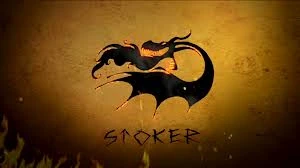
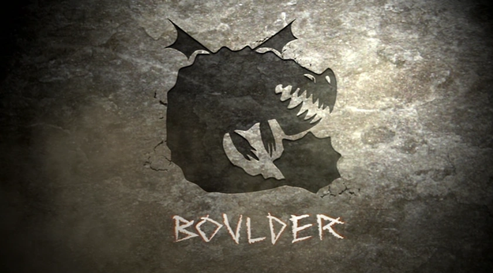
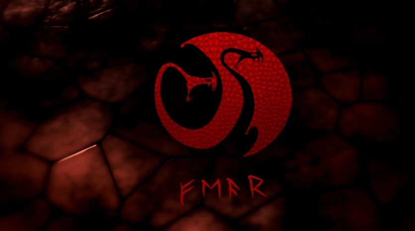
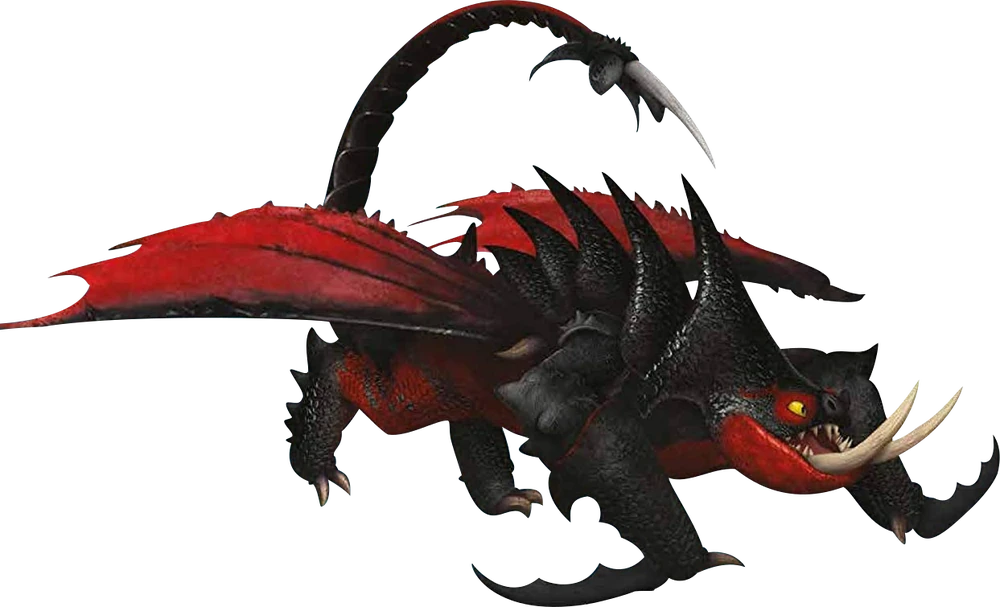
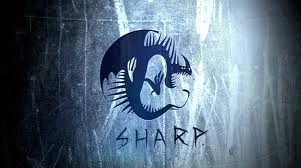
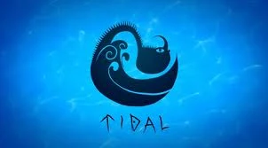
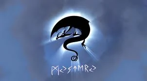
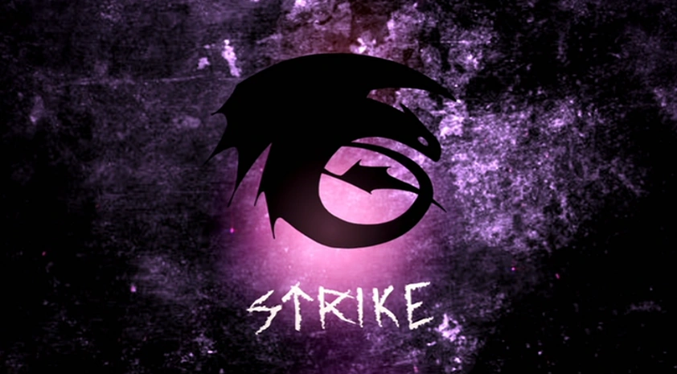
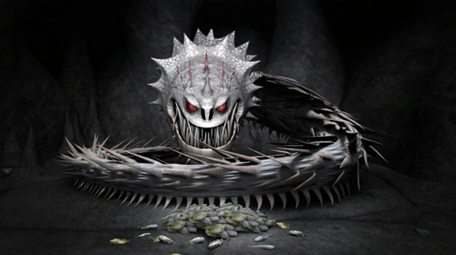

En la Franquicia de Cómo Entrenar a tu Dragón, los Gamberros Peludos clasifican a los Dragones en distintas Clases, en función de sus habilidades y rasgos. Según se cuenta en el Cortometraje El Libro de los Dragones, la idea de clasificar a los Dragones fue ideada por Bork el Bravo, y al momento de los eventos narrados en Cómo Entrenar a tu Dragón, esta clasificación se componía de seis (6) Clases, las cuales eran: Fogonero, Piedra, Espanto, Afilada, Marejada, y Embestida. A medida que los vikingos aprendieron más sobre los dragones, este sistema fue evolucionando, y al momento de los eventos de Cómo Entrenar a tu Dragón 2, estaba compuesta por siete (7) Clases, las cuales son: Fogonero, Piedra, Rastreadora, Afilada, Marejada, Misterio y Embestida.

Los Dragones en la Clase Fogonero (Stoker Class en inglés) son conocidos por tener un fuego muy potente y poca paciencia. Algunos de los dragones en esta clase tienen la habilidad de prenderle fuego a su cuerpo, como el Pesadilla Monstruosa.

Los dragones de la Clase Piedra (Boulder Class en inglés) son robustos, pesados y resistentes. Generalmente tienen la habilidad de comer piedras y, aunque sus alas suelen ser muy pequeñas comparadas al resto de su cuerpo, pueden volar tan alto y rápido como la mayoría de los dragones.

Los dragones de la Clase Espanto (Fear Class en inglés) son escurridizos, delgados, y rasgos fuera de lo usual, como poseer más de una cabeza. En Cómo Entrenar a tu Dragón 2, esta clase parece estar en desuso, tal vez por el hecho de que los vikingos de Berk viven en paz con ellos, y los dragones antes clasificados en esta clase fueron reclasificados en la Clase Misterio.

Los dragones en la Clase Rastreadora (Tracker Class en ingles) tienen un agudo sentido del olfato para rastrear y encontrar cosas.

Los dragones de la Clase Afilada (Sharp Class en inglés) son los más vanidosos y orgullosos de todos y pasan mucho tiempo pavoneándose. Estos dragones también son conocidos por tener espinas, aguijones o alas afiladas. La Clase Afilada está representada por el Mortífero Nadder, aunque actualmente esta especie se clasifica en la Clase Rastreadora.

Los dragones de la Clase Marejada (Tidal Class en inglés) viven en, o cerca de cuerpos de agua, principalmente el océano. Generalmente, no tienen fuego, sino que disparan algún otro elemento, como agua hirviendo o hielo.

Los dragones de la Clase Misterio (Mystery Class en inglés) son dragones de los que se sabe muy poco y tienen un comportamiento misterioso, y algunos ni siquiera son dragones reales, sino que son solo mitos, o al menos, eso creen los vikingos.

Los dragones de la Clase Embestida (Strike Class en inglés) son rápidos, poderosos y muy inteligentes. Son los dragones más difíciles de entrenar, pero los más leales una vez entrenados.

En ocasiones, existen dragones cuya Clase es desconocida, ya sea porque dentro del universo no se les asigno ninguna, o porque no se ha divulgado al publico. Debido a esos casos existe lo que informalmente se refiere como la Clase Desconocida (Unknown Class en inglés) es una clase no oficial, inventada y utilizada por fans para agrupar dragones cuya clase no se conoce todavía. Cuando en un artículo se indique que un dragón pertenece a la Clase Desconocida, se debe entender que se desconoce su Clase, y no que pertenece a una clase con dicho nombre.